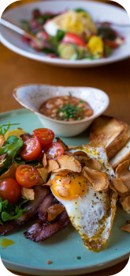

HTML / CSS
JAVASCRIPT
PHOTOSHOP
ILLUSTRATOR
FIGMA
INDESIGN
NOTION
This Web of 'JINJU' is going to
guide you to her works
Breakfast is the first meal of the day eaten after waking from the night's sleep, in the morning. The word in English refers to breaking the fasting period of the previous night. There is a strong likelihood for one or more "typical", or "traditional", breakfast menus to exist in most places, but their composition varies widely from place to place, and has varied over time, so that globally a very wide range of preparations and ingredients are now associated with breakfast.
The English word "dinner" (from Old French 'disner') also referred originally to breaking a fast; until its meaning shifted in the mid-13th century it was the name given to the first meal of the day. The tradition of eating a morning meal has existed since ancient times, though it was not until the 15th century that "breakfast" came into use in written English as a calque of dinner to describe a morning meal: 6 literally a breaking of the fasting period of the night just ended. In Old English the term had been morgenmete, literally "morning food."
Ancient Egypt
In Ancient Egypt, peasants ate a daily meal, most likely in the morning, consisting of soup, beer, bread, and onions before they left for work in the fields or work commanded by the pharaohs.
The traditional breakfast believed to have been cooked in ancient Egypt was 'foul' (also known as 'fool'; rather than poultry, this referred to fava beans), baladi bread, made from emmer wheat and falafel, and a mixture of fava beans with onions, garlic, parsley and coriander.
Ancient Greece
In Greek literature, Homer makes numerous mentions of ariston, a meal taken not long after sunrise. The Iliad notes this meal with regard to a labor-weary woodsman eager for a light repast to start his day, preparing it even as he is aching with exhaustion. The opening prose of the 16th book of The Odyssey mentions breakfast as the meal being prepared in the morning before attending to one's chores. Eventually ariston was moved to around noon, and a new morning meal was introduced.
In the post-Homeric classical period of Greece, a meal called akratisma was typically consumed immediately after rising in the morning. Akratisma consisted of barley bread dipped in wine, sometimes complemented by figs or olives. They also made pancakes called tēganitēs, tagēnitēs. or tagēnias, all words deriving from tagēnon, meaning "frying pan". The earliest attested references on tagēnias are in the works of the 5th century BC poets Cratinus and Magnes. Another kind of pancake was staititēs, from staitinos, "of flour or dough of spelt", derived itself from stais, "flour of spelt". Athenaeus in his Deipnosophistae mentions staititas topped with honey, sesame and cheese.
Ancient Rome
Romans called breakfast jentaculum (or ientaculum). It was usually composed of everyday staples like bread, cheese, olives, salad, nuts, raisins, and cold meat left over from the night before. They also drank wine-based drinks such as mulsum, a mixture of wine, honey, and aromatic spices. 1st century Latin poet Martial said that jentaculum as eaten at 3:00 or 4:00 in the morning, while 16th century scholar Claudius Saumaise wrote that it was typically eaten at 9:00 or 10:00 a.m. It seems unlikely that any fixed time was truly assigned for this meal.
Roman soldiers woke up to a breakfast of pulmentus, porridge similar to the Italian polenta, made from roasted spelt wheat or barley that was then pounded and cooked in a cauldron of water.
Address : 123, Ewhayeodae 8-gil, Seodaemun-gu
Tel : 010-0000-0000
HTML / CSS
hwanyamyu@gmail.com
EUM JIN JU
1996. 03. 25.
THANK YOU
HAVE A GOOD DAY